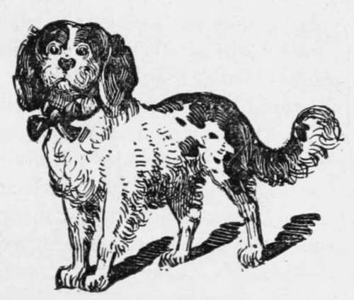

Rheumatism, Palsy, Paralysis
Description
This section is from the book "Breeding, Training, Management, Diseases Of Dogs", by Francis Butler. Also available from Amazon: Breeding, training, management, diseases.
Rheumatism, Palsy, Paralysis
Diseases of the nerves are not at all uncommon With dogs, and arc by no means the most easy of management, as they are often the focus of other maladies, which seem to revenge themselves on the nervous system, and must not be considered mere local affections. They are not however so difficult to cure, if taken to in time, before the muscles become too contracted to admit of restoration. Of course the longer the contraction has existed, the more distant the cure ; therefore all nervous affections should be taken in hand at the earliest stages.
Rheumatic affections in dogs, (as well in as the human race) are more effectually treated by simple preventives, than by any amount of Gamboge, Colocynth, Calomel, etc The following causes may suggest the most natural remedies, viz : sleeping in the damp, exposure to cold after violent exercise, sudden change from heat to cold, lack of sufficient circulation after coming out of the water, gross feeding, combined with lack of exercise, etc. No doubt the above are amply sufficient to produce any malady, incident to the canine system ; still, well nigh every dog is continually exposed to them, yet, how few comparatively are troubled with rheumatic complaints.
To the over kindness or cruel treatment of the master, are to be attributed the majority of these ailments. The Sportsman hastily lays down his gun and hurries to his repast, whilst the poor dog, who has traveled three or four miles to his master's one, is left out of doors, chilled and unattended to, impatiently waiting at the door for a stray bone, or a few indigestible scraps, instead of his having been heartily rubbed, decently fed and comfortably bedded. The house pet is hurried out from under the hot stove into the cold air, or is perhaps condemned to shiver awhile at the door, to atore for a midemeanor. The favorite Newfoundland is indulged to a bath, and tied up dripping to his kennel ; the trusty guard-dog is allowed to bask all day by the fire, and is condemned to bark all night at the moon, to keep 1 himself warm. Continued constipation of the bowels is often productive of various forms of muscular affection, by checking the regular action of the system, and producing an irregular and confined circulation. In fact, anything that tends to disorder the canine fabric may develop its results in a rheumatic form. I hope I may not be accused of Quackery, if I am inclined to treat all diseases more or less alike ; but one thing is certain, the stomach and digestive organs are the root of almost every malady, and must be the first objects of our solicitude, in all physical derangements. To many, the idea of giving an animal castor-oil for the Rhematism. or Salt for a broken leg, may appear decidedly preposterous. But with Rheumatism we must also begin by purifying the system and attending to the diet. The patient must be kept as much as possible from sudden changes, must be fed on light, yet nutritious fare, be provided with a comfortable sleeping place and not bo allowed to go out in wet weather. In the kennel to which he is chained, all chinks should be stopped, to exclude side-draughts, or he should, (if not in the house), be more properly kept in the stable, or any convenient enclosure. Repeat rubbings, morning and evening of the parts affected with strong penetrating liniments,* keeping the bowels gently open, ami occasionally administering the anti-rheumatic compound :
Gamboge. 6 grains, Coloeynth, 3 grains,
Bitter Aloes, 1 scruple mix in fat or suet
Divide into six pills, from half a one to two whole pills, to be given every evening, according to the size of the animal, and if necessary, a small dose of castor-oil, to be administered every following morning. After the above amount of pills have been taken, (or six doses), the patient should be allowed to remain two days without medicine, unless it should be requisite, to stay a looseness or promote an evacuation. Setons and blisters may be resorted to, should milder treatment prove abortive, and when there is inflammation, and there be strength enough to warrant bleeding, it may occasionally prove advantageous.
"Butler's Mange Liniment," is very efficacioui.
Warm baths arc often productive of great benefit, if the animal be not permitted to take cold. The muscular affections produced by Distemper should be treated in a similar way. When the hind legs become weak or partially paralysed, a common pitch-plaster is excellent. The hair should be thoroughly shaved off, or it will not stick : the animal may be either muzzled, or a little oil of Tar rubbed occasionally on the plaster will generally prevent him from biting it. Strychnine has been used to advantage in desperate cases of Rheumatism, Palsy and Paralysis, and I have known one instance, where a dog was cured by a dose intended to kill him. With all this, if it be used at all, it should be in very minute aoses and under the advice of a medical man, and then only us a forlorn hope.
To Calomel, we are indebted for many cases of incurable Rheumatism: therefore avoid it, us much as possible, except in cases, where the sufferer is free from exposure, or where other remedies have failed ; even then I would only give about a third of the ordinary veterinary dose, combined with a sufficient quantity of Rhubarb to correct it, and Aloes to carry it off. As in other disorders, strengthening medicines may be necessary, such as Peruvian Bark or Gentian Root mixed with ground Allspice. For delicate dogs a covering may be made to go over the loins, where there is a tendency to weakness, which should be put on only, when he is taken out.

Continue to:
- prev: Worm Doses
- Table of Contents
- next: Coach Dog